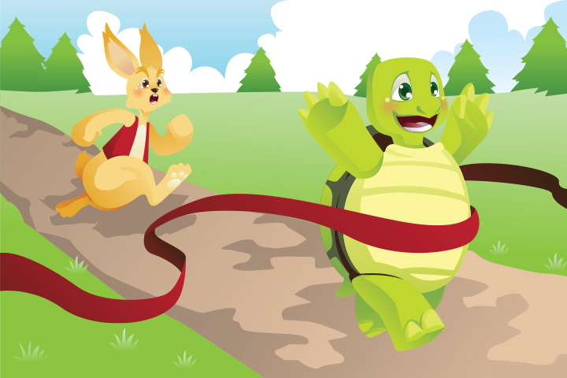

Story Two
The Hare And The Tortoise
Tired of the bragging of a speedy hare, a tortoise challenges it to a race. The overconfident hare accepts the competition and runs as fast as it can after the race begins. Soon it gets tired and decides to rest, thinking that there’s plenty of time to relax before tortoise can catch up with it. Meanwhile, the tortoise continues to walk slowly, until it reaches the finish line. The overslept hare wakes up, only to be shocked that a slow moving tortoise beat it in the race.
Moral: Slow and steady wins the race.